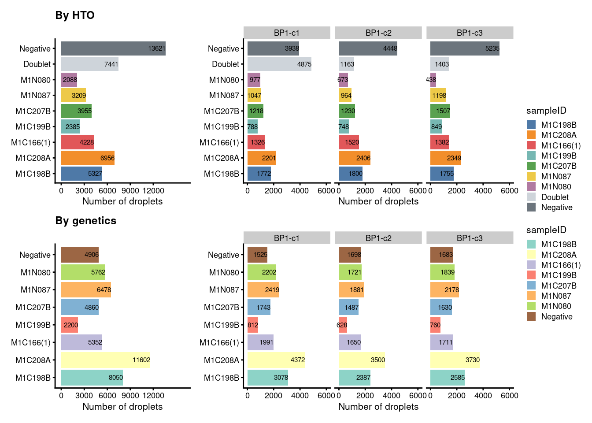
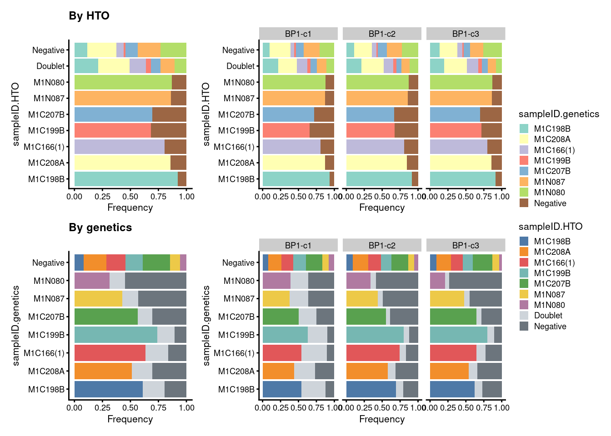
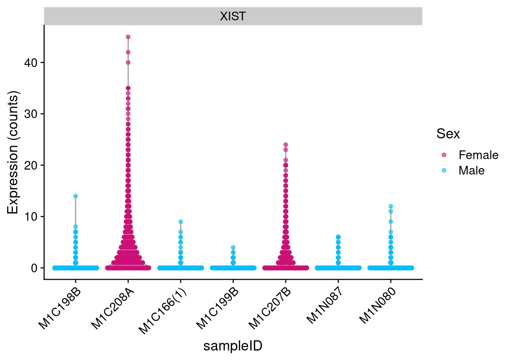
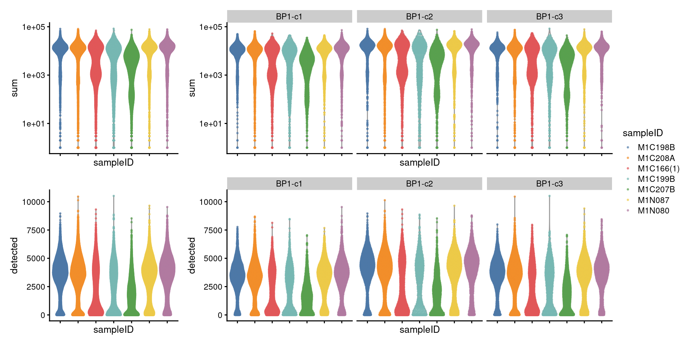
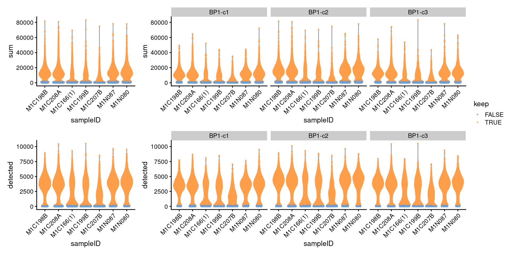
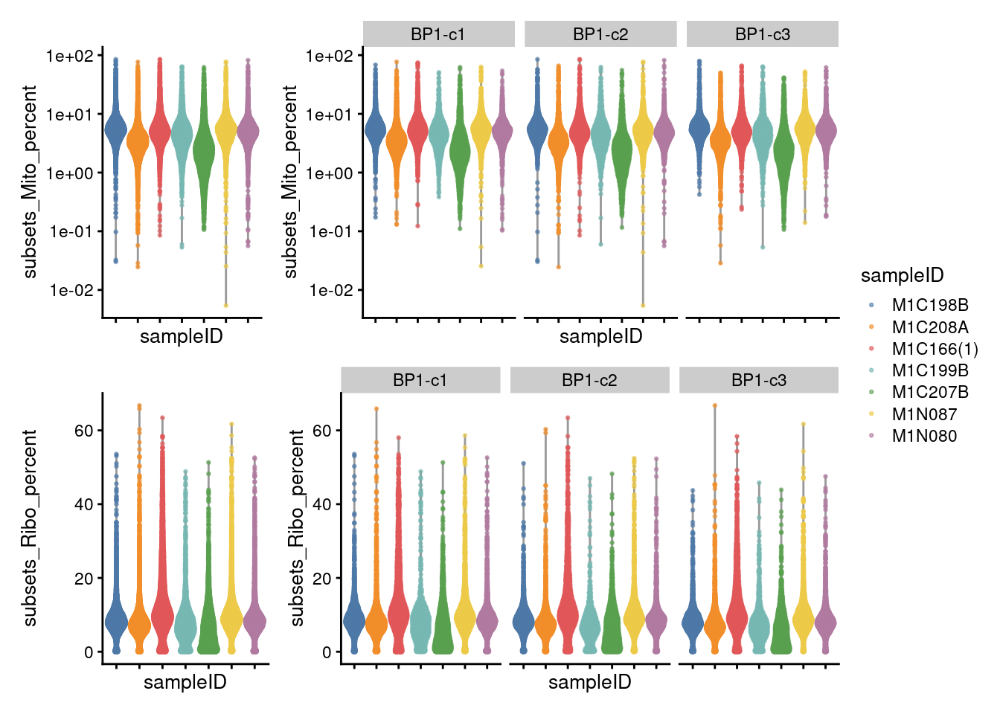
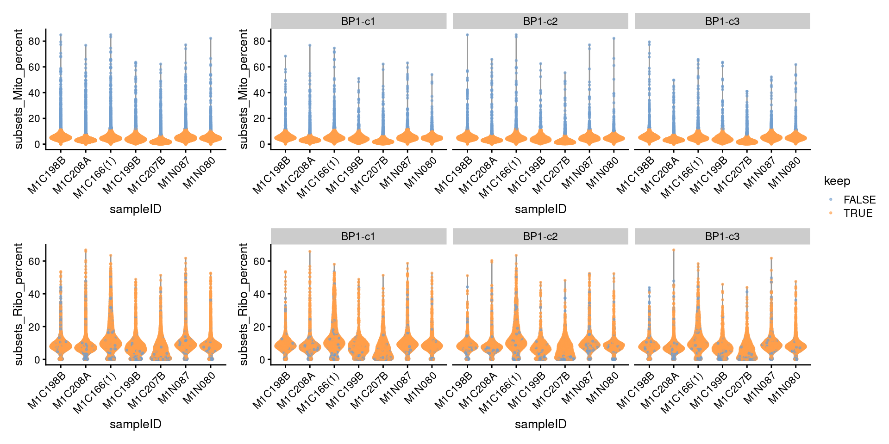
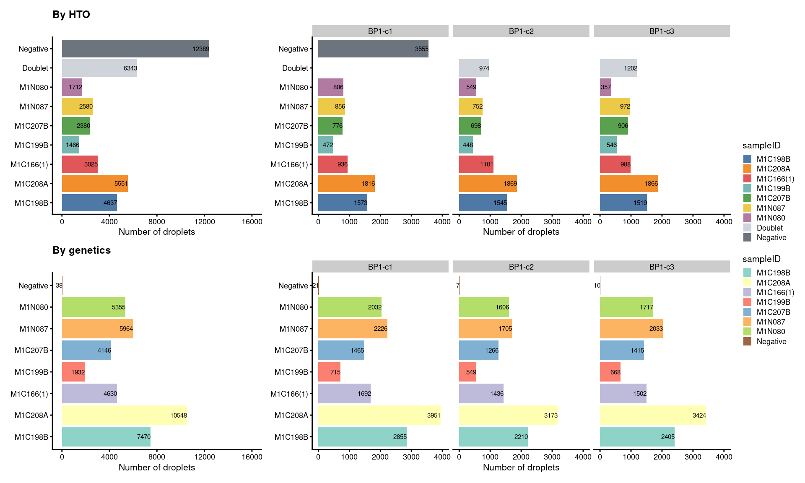
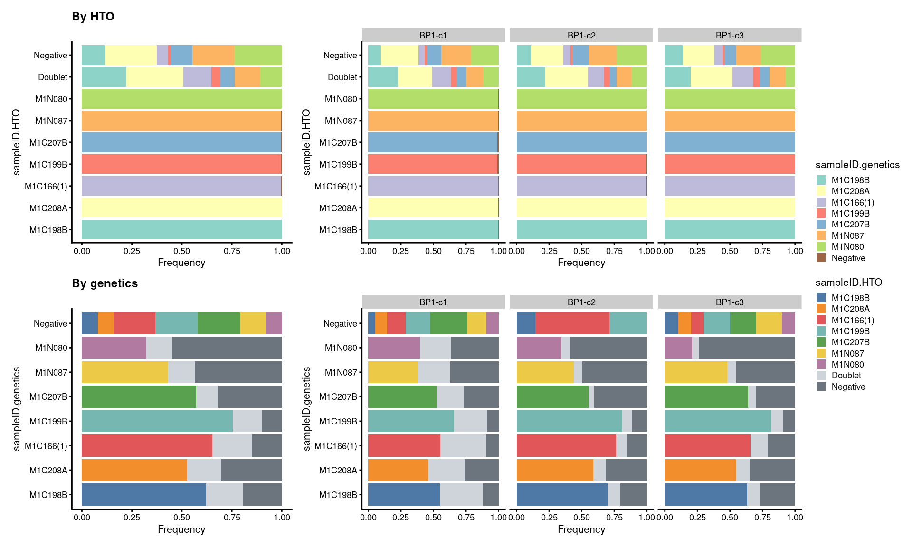

Last updated: 2025-03-18
Checks: 6 1
Knit directory: cf-eti-bal/
This reproducible R Markdown analysis was created with workflowr (version 1.7.0). The Checks tab describes the reproducibility checks that were applied when the results were created. The Past versions tab lists the development history.
The R Markdown is untracked by Git. To know which version of the R
Markdown file created these results, you’ll want to first commit it to
the Git repo. If you’re still working on the analysis, you can ignore
this warning. When you’re finished, you can run
wflow_publish to commit the R Markdown file and build the
HTML.
Great job! The global environment was empty. Objects defined in the global environment can affect the analysis in your R Markdown file in unknown ways. For reproduciblity it’s best to always run the code in an empty environment.
The command set.seed(20240504) was run prior to running
the code in the R Markdown file. Setting a seed ensures that any results
that rely on randomness, e.g. subsampling or permutations, are
reproducible.
Great job! Recording the operating system, R version, and package versions is critical for reproducibility.
Nice! There were no cached chunks for this analysis, so you can be confident that you successfully produced the results during this run.
Great job! Using relative paths to the files within your workflowr project makes it easier to run your code on other machines.
Great! You are using Git for version control. Tracking code development and connecting the code version to the results is critical for reproducibility.
The results in this page were generated with repository version adc05cc. See the Past versions tab to see a history of the changes made to the R Markdown and HTML files.
Note that you need to be careful to ensure that all relevant files for
the analysis have been committed to Git prior to generating the results
(you can use wflow_publish or
wflow_git_commit). workflowr only checks the R Markdown
file, but you know if there are other scripts or data files that it
depends on. Below is the status of the Git repository when the results
were generated:
Ignored files:
Ignored: .DS_Store
Ignored: .pki/
Ignored: cf-eti-bal/.DS_Store
Ignored: cf-eti-bal/.RData
Ignored: cf-eti-bal/analysis/.DS_Store
Ignored: cf-eti-bal/analysis/.Rhistory
Ignored: cf-eti-bal/analysis/ADGRE_hierarchy_aggregate.png
Ignored: cf-eti-bal/analysis/ADGRE_hierarchy_individual.png
Ignored: cf-eti-bal/analysis/ANNEXIN_hierarchy_aggregate.png
Ignored: cf-eti-bal/analysis/ANNEXIN_hierarchy_individual.png
Ignored: cf-eti-bal/analysis/APP_hierarchy_aggregate.png
Ignored: cf-eti-bal/analysis/APP_hierarchy_individual.png
Ignored: cf-eti-bal/analysis/ApoE_hierarchy_aggregate.png
Ignored: cf-eti-bal/analysis/ApoE_hierarchy_individual.png
Ignored: cf-eti-bal/analysis/CD45_hierarchy_aggregate.png
Ignored: cf-eti-bal/analysis/CD45_hierarchy_individual.png
Ignored: cf-eti-bal/analysis/CypA_hierarchy_aggregate.png
Ignored: cf-eti-bal/analysis/CypA_hierarchy_individual.png
Ignored: cf-eti-bal/analysis/FN1_hierarchy_aggregate.png
Ignored: cf-eti-bal/analysis/FN1_hierarchy_individual.png
Ignored: cf-eti-bal/analysis/GALECTIN_hierarchy_aggregate.png
Ignored: cf-eti-bal/analysis/GALECTIN_hierarchy_individual.png
Ignored: cf-eti-bal/analysis/GRN_hierarchy_aggregate.png
Ignored: cf-eti-bal/analysis/GRN_hierarchy_individual.png
Ignored: cf-eti-bal/analysis/MHC-II_hierarchy_aggregate.png
Ignored: cf-eti-bal/analysis/MHC-II_hierarchy_individual.png
Ignored: cf-eti-bal/analysis/MHC-I_hierarchy_aggregate.png
Ignored: cf-eti-bal/analysis/MHC-I_hierarchy_individual.png
Ignored: cf-eti-bal/analysis/MIF_hierarchy_aggregate.png
Ignored: cf-eti-bal/analysis/MIF_hierarchy_individual.png
Ignored: cf-eti-bal/analysis/MK_hierarchy_aggregate.png
Ignored: cf-eti-bal/analysis/MK_hierarchy_individual.png
Ignored: cf-eti-bal/analysis/PECAM1_hierarchy_aggregate.png
Ignored: cf-eti-bal/analysis/PECAM1_hierarchy_individual.png
Ignored: cf-eti-bal/analysis/RESISTIN_hierarchy_aggregate.png
Ignored: cf-eti-bal/analysis/RESISTIN_hierarchy_individual.png
Ignored: cf-eti-bal/analysis/VISFATIN_hierarchy_aggregate.png
Ignored: cf-eti-bal/analysis/VISFATIN_hierarchy_individual.png
Ignored: cf-eti-bal/data/.DS_Store
Untracked files:
Untracked: .Renviron
Untracked: .Rprofile
Untracked: ._.DS_Store
Untracked: ._G000323_Neeland
Untracked: .cache/
Untracked: .conda/
Untracked: .gitattributes
Untracked: .gitignore
Untracked: .local/
Untracked: .subversion/
Untracked: C133_Neeland_batch1/
Untracked: CF-BAL/
Untracked: CF-ETI-scRNA/
Untracked: Carraro_2020/
Untracked: G000323_Neeland/
Untracked: Li_2022/
Untracked: Loske_2021/
Untracked: SingleCellExperiment_tutorial/
Untracked: archive_CF-ETI-scRNA/
Untracked: archive_G000323_Neeland/
Untracked: archive_cf-eti-bal/
Untracked: backup/
Untracked: cellranger/
Untracked: cf-eti-bal/._.DS_Store
Untracked: cf-eti-bal/._RecM.markers.csv
Untracked: cf-eti-bal/._Rplots.pdf
Untracked: cf-eti-bal/._TRM-CCL.phate.markers.csv
Untracked: cf-eti-bal/._TRM-CCL.phate.markers_v250318.csv
Untracked: cf-eti-bal/._TRM.markers.csv
Untracked: cf-eti-bal/._eti.seurat.metadata.csv
Untracked: cf-eti-bal/._pairedRecMProp.csv
Untracked: cf-eti-bal/ETI.profibroticScore.fig.jpeg
Untracked: cf-eti-bal/RecM.markers.csv
Untracked: cf-eti-bal/Rplots.pdf
Untracked: cf-eti-bal/TRM-CCL.phate.markers.csv
Untracked: cf-eti-bal/TRM-CCL.phate.markers_v250318.csv
Untracked: cf-eti-bal/TRM.markers.csv
Untracked: cf-eti-bal/analysis/._.DS_Store
Untracked: cf-eti-bal/analysis/._04.annotation.Rmd
Untracked: cf-eti-bal/analysis/._06.TRM_analysis.Rmd
Untracked: cf-eti-bal/analysis/._10.ETI_analysis.Rmd
Untracked: cf-eti-bal/analysis/01.demux_BP1.Rmd
Untracked: cf-eti-bal/analysis/01.demux_BP2.Rmd
Untracked: cf-eti-bal/analysis/01.demux_Pi1.Rmd
Untracked: cf-eti-bal/analysis/01.demux_capture1.Rmd
Untracked: cf-eti-bal/analysis/02.qc_BP1.Rmd
Untracked: cf-eti-bal/analysis/02.qc_BP2.Rmd
Untracked: cf-eti-bal/analysis/02.qc_Pi1.Rmd
Untracked: cf-eti-bal/analysis/02.qc_capture1.Rmd
Untracked: cf-eti-bal/analysis/03.combine.Rmd
Untracked: cf-eti-bal/analysis/04.annotation.Rmd
Untracked: cf-eti-bal/analysis/05.RecM_analysis.v2.Rmd
Untracked: cf-eti-bal/analysis/06.TRM_analysis.Rmd
Untracked: cf-eti-bal/analysis/06.TRM_analysis.v2.Rmd
Untracked: cf-eti-bal/analysis/07.Epithelial_analysis.Rmd
Untracked: cf-eti-bal/analysis/08.TNK_analysis.Rmd
Untracked: cf-eti-bal/analysis/09.CD8T_analysis.Rmd
Untracked: cf-eti-bal/analysis/09.Others_analysis.Rmd
Untracked: cf-eti-bal/analysis/09.cellchat.Rmd
Untracked: cf-eti-bal/analysis/09.cellchat.v2.Rmd
Untracked: cf-eti-bal/analysis/10.ETI_analysis.Rmd
Untracked: cf-eti-bal/analysis/11.MDM-PLA2G7_analysis.Rmd
Untracked: cf-eti-bal/analysis/12.TRM_public_analysis.Rmd
Untracked: cf-eti-bal/analysis/13.TRM-CCL_analysis.Rmd
Untracked: cf-eti-bal/analysis/ADGRE_hierarchy_aggregate.svg
Untracked: cf-eti-bal/analysis/ADGRE_hierarchy_individual.svg
Untracked: cf-eti-bal/analysis/ANNEXIN_hierarchy_aggregate.svg
Untracked: cf-eti-bal/analysis/ANNEXIN_hierarchy_individual.svg
Untracked: cf-eti-bal/analysis/APP_hierarchy_aggregate.svg
Untracked: cf-eti-bal/analysis/APP_hierarchy_individual.svg
Untracked: cf-eti-bal/analysis/ApoE_hierarchy_aggregate.svg
Untracked: cf-eti-bal/analysis/ApoE_hierarchy_individual.svg
Untracked: cf-eti-bal/analysis/CD45_hierarchy_aggregate.svg
Untracked: cf-eti-bal/analysis/CD45_hierarchy_individual.svg
Untracked: cf-eti-bal/analysis/CypA_hierarchy_aggregate.svg
Untracked: cf-eti-bal/analysis/CypA_hierarchy_individual.svg
Untracked: cf-eti-bal/analysis/FN1_hierarchy_aggregate.svg
Untracked: cf-eti-bal/analysis/FN1_hierarchy_individual.svg
Untracked: cf-eti-bal/analysis/GALECTIN_hierarchy_aggregate.svg
Untracked: cf-eti-bal/analysis/GALECTIN_hierarchy_individual.svg
Untracked: cf-eti-bal/analysis/GRN_hierarchy_aggregate.svg
Untracked: cf-eti-bal/analysis/GRN_hierarchy_individual.svg
Untracked: cf-eti-bal/analysis/LAMININ_hierarchy_individual.svg
Untracked: cf-eti-bal/analysis/MHC-II_hierarchy_aggregate.svg
Untracked: cf-eti-bal/analysis/MHC-II_hierarchy_individual.svg
Untracked: cf-eti-bal/analysis/MHC-I_hierarchy_aggregate.svg
Untracked: cf-eti-bal/analysis/MHC-I_hierarchy_individual.svg
Untracked: cf-eti-bal/analysis/MIF_hierarchy_aggregate.svg
Untracked: cf-eti-bal/analysis/MIF_hierarchy_individual.svg
Untracked: cf-eti-bal/analysis/MK_hierarchy_aggregate.svg
Untracked: cf-eti-bal/analysis/MK_hierarchy_individual.svg
Untracked: cf-eti-bal/analysis/PECAM1_hierarchy_aggregate.svg
Untracked: cf-eti-bal/analysis/PECAM1_hierarchy_individual.svg
Untracked: cf-eti-bal/analysis/PHATE_check.Rmd
Untracked: cf-eti-bal/analysis/RESISTIN_hierarchy_aggregate.svg
Untracked: cf-eti-bal/analysis/RESISTIN_hierarchy_individual.svg
Untracked: cf-eti-bal/analysis/TrialandError.Rmd
Untracked: cf-eti-bal/analysis/VISFATIN_hierarchy_aggregate.svg
Untracked: cf-eti-bal/analysis/VISFATIN_hierarchy_individual.svg
Untracked: cf-eti-bal/before.csv
Untracked: cf-eti-bal/capture.list
Untracked: cf-eti-bal/clustering.pbs
Untracked: cf-eti-bal/code/._bal_RecM.integration_clustering.R
Untracked: cf-eti-bal/code/adam.process.R
Untracked: cf-eti-bal/code/annotation_HLCAv2.R
Untracked: cf-eti-bal/code/azimuth.pbs
Untracked: cf-eti-bal/code/bal.manual_annot.integration_clustering.R
Untracked: cf-eti-bal/code/bal_CD8T.integration_clustering.R
Untracked: cf-eti-bal/code/bal_Epithelial.integration_clustering.R
Untracked: cf-eti-bal/code/bal_Epithelial.integration_clustering.round2.R
Untracked: cf-eti-bal/code/bal_GOenrichment.R
Untracked: cf-eti-bal/code/bal_GOenrichment_noETI.R
Untracked: cf-eti-bal/code/bal_GOenrichment_v2.R
Untracked: cf-eti-bal/code/bal_GOenrichment_v3.R
Untracked: cf-eti-bal/code/bal_GOenrichment_v4.R
Untracked: cf-eti-bal/code/bal_Others.integration_clustering.R
Untracked: cf-eti-bal/code/bal_RecM.integration_clustering.R
Untracked: cf-eti-bal/code/bal_RecM.public_integration_clustering.R
Untracked: cf-eti-bal/code/bal_RecM_Control.integration_clustering.R
Untracked: cf-eti-bal/code/bal_T.integration_clustering.R
Untracked: cf-eti-bal/code/bal_T.integration_clustering.round2.R
Untracked: cf-eti-bal/code/bal_TNK.integration_clustering.R
Untracked: cf-eti-bal/code/bal_TNK.integration_clustering.round2.R
Untracked: cf-eti-bal/code/bal_TNK.integration_clustering.round3.R
Untracked: cf-eti-bal/code/bal_TRM-CCL.integration_clustering.R
Untracked: cf-eti-bal/code/bal_TRM.integration_clustering.R
Untracked: cf-eti-bal/code/bal_TRM.public.CF_integration_clustering.R
Untracked: cf-eti-bal/code/bal_TRM.public.HC_integration_clustering.R
Untracked: cf-eti-bal/code/bal_TRM.public_integration_clustering.R
Untracked: cf-eti-bal/code/bal_TRMimmune.integration_clustering.R
Untracked: cf-eti-bal/code/bal_mac.integration_clustering.R
Untracked: cf-eti-bal/code/bal_mac.merge_clustering.R
Untracked: cf-eti-bal/code/bal_mac.merge_clustering.round2.R
Untracked: cf-eti-bal/code/bal_others.merge_clustering.R
Untracked: cf-eti-bal/code/bal_tnk.merge_clustering.R
Untracked: cf-eti-bal/code/bal_tnk.merge_clustering.round2.R
Untracked: cf-eti-bal/code/cellbender.pbs
Untracked: cf-eti-bal/code/cellbender.sh
Untracked: cf-eti-bal/code/cellranger-multi.sh
Untracked: cf-eti-bal/code/cellsnp-lite.pbs
Untracked: cf-eti-bal/code/cellsnp-lite.sh
Untracked: cf-eti-bal/code/cellsnp-lite_emptyDrops.pbs
Untracked: cf-eti-bal/code/cellsnp-lite_emptyDrops.sh
Untracked: cf-eti-bal/code/clustering.R
Untracked: cf-eti-bal/code/clustering_try.R
Untracked: cf-eti-bal/code/integration.R
Untracked: cf-eti-bal/code/integration_batch.R
Untracked: cf-eti-bal/code/integration_batchID.R
Untracked: cf-eti-bal/code/integration_clustering.R
Untracked: cf-eti-bal/code/mac.subcluster.R
Untracked: cf-eti-bal/code/qsub_azimuth.sh
Untracked: cf-eti-bal/code/qsub_cellbender.sh
Untracked: cf-eti-bal/code/qsub_cellsnp-lite.sh
Untracked: cf-eti-bal/code/qsub_cellsnp-lite_emptyDrops.sh
Untracked: cf-eti-bal/code/qsub_vireo.sh
Untracked: cf-eti-bal/code/qsub_vireo_emptyDrops.sh
Untracked: cf-eti-bal/code/vireo.pbs
Untracked: cf-eti-bal/code/vireo.sh
Untracked: cf-eti-bal/code/vireo_emptyDrops.pbs
Untracked: cf-eti-bal/code/vireo_emptyDrops.sh
Untracked: cf-eti-bal/code/writeDE.R
Untracked: cf-eti-bal/data.use.csv
Untracked: cf-eti-bal/data/._.DS_Store
Untracked: cf-eti-bal/data/._Fig2B.raw.csv
Untracked: cf-eti-bal/data/._Fig2B.stat.CFvsHC.csv
Untracked: cf-eti-bal/data/._Fig2B.stat.csv
Untracked: cf-eti-bal/data/._Fig3A.raw.csv
Untracked: cf-eti-bal/data/._Fig3A.stat.csv
Untracked: cf-eti-bal/data/._Li.stat.csv
Untracked: cf-eti-bal/data/._Liao.stat.csv
Untracked: cf-eti-bal/data/._Morrell.stat.csv
Untracked: cf-eti-bal/data/._TRM.phate.Cepo.markers.csv
Untracked: cf-eti-bal/data/._TableE2.csv
Untracked: cf-eti-bal/data/._Wendisch.stat.csv
Untracked: cf-eti-bal/data/._cftr.exp.csv
Untracked: cf-eti-bal/data/CellChat/
Untracked: cf-eti-bal/data/DE/
Untracked: cf-eti-bal/data/Fig2B.raw.csv
Untracked: cf-eti-bal/data/Fig2B.stat.CFvsHC.csv
Untracked: cf-eti-bal/data/Fig2B.stat.csv
Untracked: cf-eti-bal/data/Fig3A.raw.csv
Untracked: cf-eti-bal/data/Fig3A.stat.csv
Untracked: cf-eti-bal/data/FindAllMarkers/
Untracked: cf-eti-bal/data/GOBP/
Untracked: cf-eti-bal/data/Li.stat.csv
Untracked: cf-eti-bal/data/Liao.stat.csv
Untracked: cf-eti-bal/data/Morrell.stat.csv
Untracked: cf-eti-bal/data/SCEs/
Untracked: cf-eti-bal/data/TRM.phate.Cepo.markers.csv
Untracked: cf-eti-bal/data/TableE2.csv
Untracked: cf-eti-bal/data/Wendisch.stat.csv
Untracked: cf-eti-bal/data/cellbender/
Untracked: cf-eti-bal/data/cellranger/
Untracked: cf-eti-bal/data/cellsnp-lite/
Untracked: cf-eti-bal/data/cellsnp-lite_emptyDrops/
Untracked: cf-eti-bal/data/cftr.exp.csv
Untracked: cf-eti-bal/data/emptyDrops/
Untracked: cf-eti-bal/data/pathway/
Untracked: cf-eti-bal/data/plots/
Untracked: cf-eti-bal/data/public_datasets/
Untracked: cf-eti-bal/data/sample_sheets/
Untracked: cf-eti-bal/data/tradeSeq/
Untracked: cf-eti-bal/data/tradeseq/
Untracked: cf-eti-bal/data/vireo/
Untracked: cf-eti-bal/data/vireo_emptyDrops/
Untracked: cf-eti-bal/eti.seurat.metadata.csv
Untracked: cf-eti-bal/integration.pbs
Untracked: cf-eti-bal/minmax.csv
Untracked: cf-eti-bal/notes/
Untracked: cf-eti-bal/obsolete/
Untracked: cf-eti-bal/pairedRecMProp.csv
Untracked: cf-eti-bal/pairedRecMProp.jpeg
Untracked: cf-eti-bal/phate_batch.jpeg
Untracked: cf-eti-bal/phate_dens_batch.jpeg
Untracked: cf-eti-bal/phate_dens_condition.jpeg
Untracked: cf-eti-bal/phate_fastMNN.jpeg
Untracked: cf-eti-bal/qsub_clustering.sh
Untracked: cf-eti-bal/qsub_integration.sh
Untracked: cf-eti-bal/queue_log/
Untracked: cf-eti-bal/vireo.list
Untracked: cf-eti-bal/workflowr.sh
Untracked: cf-eti-bal/zscore.csv
Untracked: cf-pbmc-bal/
Untracked: chapter3/
Untracked: chapter4/
Untracked: healthy-bal/
Untracked: presentation/
Staged changes:
New: cf-eti-bal/.Rprofile
New: cf-eti-bal/.gitattributes
New: cf-eti-bal/.gitignore
New: cf-eti-bal/README.md
New: cf-eti-bal/_workflowr.yml
New: cf-eti-bal/analysis/about.Rmd
New: cf-eti-bal/analysis/index.Rmd
New: cf-eti-bal/analysis/license.Rmd
New: cf-eti-bal/cf-eti-bal.Rproj
New: cf-eti-bal/code/README.md
New: cf-eti-bal/data/README.md
New: cf-eti-bal/output/README.md
Note that any generated files, e.g. HTML, png, CSS, etc., are not included in this status report because it is ok for generated content to have uncommitted changes.
There are no past versions. Publish this analysis with
wflow_publish() to start tracking its development.
knitr::opts_chunk$set(warning = FALSE, message = FALSE)
xaringanExtra::use_panelset()suppressPackageStartupMessages({
library(DropletUtils)
library(here)
library(ggplot2)
library(Seurat)
library(cowplot)
library(patchwork)
library(scater)
library(dplyr)
library(forcats)
library(janitor)
library(stringr)
library(AnnotationHub)
library(ensembldb)
library(msigdbr)
library(Homo.sapiens)
})
set.seed(1990)# Specify batch name
batch_name <- "BP1"
num_of_captures <- 3
# Specify capture name
capture_names <- c(paste0(batch_name, "-c",1:num_of_captures))
capture_names <- setNames(capture_names, capture_names)
# Assign sample ID to HTO ID
# Manually list sample names matching HTO id (in alphabetical order)
samples <- c("M1C198B", #HTO3
"M1C208A", #HTO6
"M1C166(1)", #HTO7
"M1C199B", #HTO8
"M1C207B", #HTO10
"M1N087", #HTO12
"M1N080" #HTO13
)# read demultiplexing outputs
sce <- readRDS(here("data",
"SCEs",
"demux",
paste0(batch_name,".cellbender.demux.SCE.rds")))
# number of droplets before removal
dim(sce)[1] 36601 62050# A. remove droplets classified as "doublets" by Vireo
sce <- sce[, which(sce$sampleID.genetics != "Doublet")]
# number of droplets after doublet removal
dim(sce)[1] 36601 55465# look for the following droplets
## genetically non-negatives with matched sampleID.genetics and sampleID.HTO
## or classified as Doublet or Negative by HTODemux
nneg_match <- sce$sampleID.genetics != "Negative" &
(sce$sampleID.HTO == sce$sampleID.genetics |
sce$sampleID.HTO %in% c("Doublet","Negative"))
## genetically negatives but with HTO classification
neg_match <- sce$sampleID.genetics == "Negative" &
sce$sampleID.HTO %in% samples
# B. keep droplets that match the demultiplexing criteria
sce <- sce[, nneg_match | neg_match]
# number of droplets after demultiplexing
dim(sce)[1] 36601 49781# C. remove droplets with posterior counts of zero called by CellBender
# see: https://github.com/broadinstitute/CellBender/issues/111
sce <- sce[, colSums(counts(sce)) != 0]
# number of droplets after removing droplets with zero counts
dim(sce)[1] 36601 49210# rename sampleID
sampleID <- setNames(factor(case_when(
sce$sampleID.genetics == "Negative" ~ sce$sampleID.HTO,
TRUE ~ sce$sampleID.genetics),levels = samples),
colnames(sce))
sce$sampleID <- sampleID# number of droplets assigned by HTO method
p1 <- ggcells(sce) +
geom_bar(aes(x = sampleID.HTO, fill = sampleID.HTO)) +
geom_text(stat='count', aes(x = sampleID.HTO, label=..count..), hjust=1, size=2) +
coord_flip() +
ggtitle("By HTO") +
ylab("Number of droplets") +
theme_cowplot(font_size = 8) +
scale_y_continuous(breaks=seq(0,12000,3000),limits=c(0,16000)) +
scale_fill_manual(values = sce$colours$sampleID.HTO_colours) +
theme(axis.title.y = element_blank()) +
guides(fill=guide_legend(title="sampleID"))
p1.facet <- ggcells(sce) +
geom_bar(aes(x = sampleID.HTO, fill = sampleID.HTO)) +
geom_text(stat='count', aes(x = sampleID.HTO, label=..count..),
hjust=1, size=2) +
#ggtitle("By HTO") +
ylab("Number of droplets") +
facet_grid(~Capture, scales = "fixed", space = "fixed") +
theme_cowplot(font_size = 8) +
scale_y_continuous(breaks=seq(0,6000,2000), limits = c(0,6000)) +
scale_fill_manual(values = sce$colours$sampleID.HTO_colours) +
theme(axis.title.y = element_blank()) +
guides(fill=guide_legend(title="sampleID")) +
coord_flip()
# number of droplets assigned by genetic method
p2 <- ggcells(sce) +
geom_bar(aes(x = sampleID.genetics, fill = sampleID.genetics)) +
geom_text(stat='count', aes(x = sampleID.genetics, label=..count..), hjust=1, size=2) +
coord_flip() +
ggtitle("By genetics") +
ylab("Number of droplets") +
theme_cowplot(font_size = 8) +
scale_y_continuous(breaks=seq(0,12000,3000), limits = c(0,16000)) +
scale_fill_manual(values = sce$colours$sampleID.genetics_colours) +
theme(axis.title.y = element_blank()) +
guides(fill=FALSE)
p2.facet <- ggcells(sce) +
geom_bar(aes(x = sampleID.genetics, fill = sampleID.genetics)) +
geom_text(stat='count', aes(x = sampleID.genetics, label=..count..),
hjust=1, size=2) +
ylab("Number of droplets") +
facet_grid(~Capture, scales = "fixed", space = "fixed") +
theme_cowplot(font_size = 8) +
scale_y_continuous(breaks=seq(0,6000,2000), limits = c(0,6000)) +
scale_fill_manual(values = sce$colours$sampleID.genetics_colours) +
theme(axis.title.y = element_blank()) +
guides(fill=guide_legend(title="sampleID")) +
coord_flip()
(p1+p1.facet+plot_layout(width=c(1,2))) /
(p2+p2.facet+plot_layout(width=c(1,2))) +
plot_layout(guides="collect")
# proportion of genetically assigned droplets in each HTO
p3 <- ggcells(sce) +
geom_bar(
aes(x = sampleID.HTO, fill = sampleID.genetics),
position = position_fill(reverse = TRUE)) +
coord_flip() +
ylab("Frequency") +
theme_cowplot(font_size = 8) +
scale_fill_manual(values = sce$colours$sampleID.genetics_colours)
# proportion of HTO assigned droplets in each genetic donor
p4 <- ggcells(sce) +
geom_bar(
aes(x = sampleID.genetics, fill = sampleID.HTO),
position = position_fill(reverse = TRUE)) +
coord_flip() +
ylab("Frequency") +
theme_cowplot(font_size = 8) +
scale_fill_manual(values = sce$colours$sampleID.HTO_colours)
((p3 + ggtitle("By HTO")) +
p3 + facet_grid(~Capture) + plot_layout(widths = c(1, 2))) /
((p4 + ggtitle("By genetics")) +
p4 + facet_grid(~Capture) + plot_layout(widths = c(1, 2))) +
plot_layout(guides = "collect")
# read metadata.csv
metadata <- read.csv(here("data",
"sample_sheets",
paste0(batch_name,".metadata.csv")))
i <- match(sce$sampleID, metadata$sampleID)
# add patient demographics
colData(sce) <- cbind(
colData(sce),
metadata[i,c("Age","Sex","Condition","Bronchiectasis")]
)
# sex check by the expression of XIST, a female-specific gene.
# this detects certain types of sample-mix-ups.
plotExpression(
sce,
"XIST",
x = "sampleID",
colour_by = "Sex",
exprs_values = "counts",
swap_rownames = "Symbol") +
scale_colour_manual(
values = c(
"Female" = "deeppink3",
"Male" = "deepskyblue"),
name = "Sex") +
theme_cowplot() +
theme(axis.text.x = element_text(angle = 45, vjust = 1, hjust = 1))
# make feature names unique
rownames(sce) <- uniquifyFeatureNames(rowData(sce)$ID, rowData(sce)$Symbol)
# prepare ensembl v98 database
ah <- AnnotationHub(cache="/group/canc2/anson/.cache/R/AnnotationHub", ask=FALSE)
EnsDb.Hsapiens.v98 <- query(ah, c("EnsDb", "Homo Sapiens", 98))[[1]]
ensdb_columns <- setNames(c("GENEBIOTYPE", "SEQNAME"),
paste0("ENSEMBL.",
c("GENEBIOTYPE", "SEQNAME")))
stopifnot(all(ensdb_columns %in% columns(EnsDb.Hsapiens.v98)))
ensdb_df <- DataFrame(
lapply(ensdb_columns, function(column) {
mapIds(
x = EnsDb.Hsapiens.v98,
keys = rowData(sce)$ID,
keytype = "GENEID",
column = column,
multiVals = "first")
}),
row.names = rowData(sce)$ID)
# prepare ncbi database
ncbi_columns <- setNames(c("ALIAS", "ENTREZID", "GENENAME"),
paste0("NCBI.", c("ALIAS", "ENTREZID", "GENENAME")))
stopifnot(all(ncbi_columns %in% columns(Homo.sapiens)))
ncbi_df <- DataFrame(
lapply(ncbi_columns, function(column) {
mapIds(
x = Homo.sapiens,
keys = rowData(sce)$ID,
keytype = "ENSEMBL",
column = column,
multiVals = "CharacterList")
}),
row.names = rowData(sce)$ID)
rowData(sce) <- cbind(rowData(sce), ensdb_df, ncbi_df)Some code in this section are derived from Dr. Jovana Maksimovic’s work for (Maksimovic et al. 2022)
# prepare gene sets
## mitochondrial gene set
mito_set <- rownames(sce)[which(rowData(sce)$ENSEMBL.SEQNAME == "MT")]
is_mito <- rownames(sce) %in% mito_set
summary(is_mito) Mode FALSE TRUE
logical 36588 13 ## ribosomal gene set
ribo_set <- grep("^RP(S|L)", rownames(sce), value = TRUE)
c2_sets <- msigdbr(species = "Homo sapiens", category = "C2")
ribo_set <- union(
ribo_set,
c2_sets[c2_sets$gs_name == "KEGG_RIBOSOME", ]$human_gene_symbol)
is_ribo <- rownames(sce) %in% ribo_set
summary(is_ribo) Mode FALSE TRUE
logical 36494 107 ## sex-linked genes
sex_set <- rownames(sce)[rowData(sce)$ENSEMBL.SEQNAME %in% c("X", "Y")]
## pseudogenes
pseudogene_set <- rownames(sce)[grepl("pseudogene", rowData(sce)$ENSEMBL.GENEBIOTYPE)]
# calculate QC metrics
sce <- addPerCellQCMetrics(
sce,
subsets = list(Mito = which(is_mito),
Ribo = which(is_ribo)),
use.altexps = NULL)# library size
p1 <- plotColData(
sce,
"sum",
x = "sampleID",
colour_by = "sampleID",
point_size = 0.5) +
scale_y_log10() +
scale_colour_manual(values = sce$colours$sample_colours, name = "sampleID") +
theme(axis.text.x = element_blank())
# number of genes detected
p2 <- plotColData(
sce,
"detected",
x = "sampleID",
colour_by = "sampleID",
point_size = 0.5) +
scale_colour_manual(values = sce$colours$sample_colours, name = "sampleID") +
theme(axis.text.x = element_blank())
((p1 + NoLegend()) + p1 + facet_grid(~sce$Capture) + plot_layout(widths=c(1, length(capture_names))))/
((p2 + NoLegend()) + p2 + facet_grid(~sce$Capture) + plot_layout(widths=c(1, length(capture_names)))) +
plot_layout(guides="collect") ### 7.2.2 Remove cells with features < 200
sce$batch <- interaction(
sce$Capture,
sce$sampleID,
drop = TRUE,
lex.order = FALSE)
feature_drop <- sce$detected < 200
sce_pre_QC_outlier_removal <- sce
keep <- !feature_drop
sce_pre_QC_outlier_removal$keep <- keep
sce <- sce[, keep]
data.frame(
ByFeature = tapply(
feature_drop,
sce_pre_QC_outlier_removal$batch,
sum,
na.rm = TRUE),
Remaining = as.vector(unname(table(sce$batch))),
PercRemaining = round(
100 * as.vector(unname(table(sce$batch))) /
as.vector(
unname(
table(sce_pre_QC_outlier_removal$batch))), 1)) |>
tibble::rownames_to_column("batch") |>
dplyr::arrange(dplyr::desc(PercRemaining)) |>
DT::datatable(
caption = "Number of droplets removed by each QC step and the number of droplets remaining.",
rownames = FALSE) |>
DT::formatRound("PercRemaining", 1)p3 <- plotColData(
sce_pre_QC_outlier_removal,
"sum",
x = "sampleID",
colour_by = "keep",
point_size = 0.5) +
theme(axis.text.x = element_text(angle = 45, hjust = 1))
p4 <- plotColData(
sce_pre_QC_outlier_removal,
"detected",
x = "sampleID",
colour_by = "keep",
point_size = 0.5) +
theme(axis.text.x = element_text(angle = 45, hjust = 1))
((p3 + NoLegend()) + p3 + facet_grid(~sce_pre_QC_outlier_removal$Capture) + plot_layout(widths=c(1, length(capture_names))))/
((p4 + NoLegend()) + p4 + facet_grid(~sce_pre_QC_outlier_removal$Capture) + plot_layout(widths=c(1, length(capture_names)))) +
plot_layout(guides="collect")
# subsets_Mito_percent
p1 <- plotColData(
sce,
"subsets_Mito_percent",
x = "sampleID",
colour_by = "sampleID",
point_size = 0.5) +
scale_y_log10() +
scale_colour_manual(values = sce$colours$sample_colours, name = "sampleID") +
theme(axis.text.x = element_blank())
# subsets_Ribo_percent
p2 <- plotColData(
sce,
"subsets_Ribo_percent",
x = "sampleID",
colour_by = "sampleID",
point_size = 0.5) +
scale_colour_manual(values = sce$colours$sample_colours, name = "sampleID") +
theme(axis.text.x = element_blank())
((p1 + NoLegend()) + p1 + facet_grid(~sce$Capture) + plot_layout(widths=c(1, length(capture_names))))/
((p2 + NoLegend()) + p2 + facet_grid(~sce$Capture) + plot_layout(widths=c(1, length(capture_names)))) +
plot_layout(guides="collect")
mito_drop <- isOutlier(
metric = sce$subsets_Mito_percent,
nmads = 3,
type = "higher",
batch = sce$batch)
sce_pre_QC_outlier_removal <- sce
keep <- !mito_drop
sce_pre_QC_outlier_removal$keep <- keep
sce <- sce[, keep]
data.frame(
ByMito = tapply(
mito_drop,
sce_pre_QC_outlier_removal$batch,
sum,
na.rm = TRUE),
Remaining = as.vector(unname(table(sce$batch))),
PercRemaining = round(
100 * as.vector(unname(table(sce$batch))) /
as.vector(
unname(
table(sce_pre_QC_outlier_removal$batch))), 1)) |>
tibble::rownames_to_column("batch") |>
dplyr::arrange(dplyr::desc(PercRemaining)) |>
DT::datatable(
caption = "Number of droplets removed by each QC step and the number of droplets remaining.",
rownames = FALSE) |>
DT::formatRound("PercRemaining", 1)p3 <- plotColData(
sce_pre_QC_outlier_removal,
"subsets_Mito_percent",
x = "sampleID",
colour_by = "keep",
point_size = 0.5) +
theme(axis.text.x = element_text(angle = 45, hjust = 1))
p4 <- plotColData(
sce_pre_QC_outlier_removal,
"subsets_Ribo_percent",
x = "sampleID",
colour_by = "keep",
point_size = 0.5) +
theme(axis.text.x = element_text(angle = 45, hjust = 1))
((p3 + NoLegend()) + p3 + facet_grid(~sce_pre_QC_outlier_removal$Capture) + plot_layout(widths=c(1, length(capture_names))))/
((p4 + NoLegend()) + p4 + facet_grid(~sce_pre_QC_outlier_removal$Capture) + plot_layout(widths=c(1, length(capture_names)))) +
plot_layout(guides="collect")
# number of droplets assigned by HTO method
p1 <- ggcells(sce) +
geom_bar(aes(x = sampleID.HTO, fill = sampleID.HTO)) +
geom_text(stat='count', aes(x = sampleID.HTO, label=..count..), hjust=1, size=2) +
coord_flip() +
ggtitle("By HTO") +
ylab("Number of droplets") +
theme_cowplot(font_size = 8) +
scale_y_continuous(breaks=seq(0,16000,4000),limits=c(0,16000)) +
scale_fill_manual(values = sce$colours$sampleID.HTO_colours) +
theme(axis.title.y = element_blank()) +
guides(fill=guide_legend(title="sampleID"))
p1.facet <- ggcells(sce) +
geom_bar(aes(x = sampleID.HTO, fill = sampleID.HTO)) +
geom_text(stat='count', aes(x = sampleID.HTO, label=..count..),
hjust=1, size=2) +
#ggtitle("By HTO") +
ylab("Number of droplets") +
facet_grid(~Capture, scales = "fixed", space = "fixed") +
theme_cowplot(font_size = 8) +
scale_y_continuous(breaks=seq(0,4000,1000), limits = c(0,4000)) +
scale_fill_manual(values = sce$colours$sampleID.HTO_colours) +
theme(axis.title.y = element_blank()) +
guides(fill=guide_legend(title="sampleID")) +
coord_flip()
# number of droplets assigned by genetic method
p2 <- ggcells(sce) +
geom_bar(aes(x = sampleID.genetics, fill = sampleID.genetics)) +
geom_text(stat='count', aes(x = sampleID.genetics, label=..count..), hjust=1, size=2) +
coord_flip() +
ggtitle("By genetics") +
ylab("Number of droplets") +
theme_cowplot(font_size = 8) +
scale_y_continuous(breaks=seq(0,16000,4000), limits = c(0,16000)) +
scale_fill_manual(values = sce$colours$sampleID.genetics_colours) +
theme(axis.title.y = element_blank()) +
guides(fill=FALSE)
p2.facet <- ggcells(sce) +
geom_bar(aes(x = sampleID.genetics, fill = sampleID.genetics)) +
geom_text(stat='count', aes(x = sampleID.genetics, label=..count..),
hjust=1, size=2) +
ylab("Number of droplets") +
facet_grid(~Capture, scales = "fixed", space = "fixed") +
theme_cowplot(font_size = 8) +
scale_y_continuous(breaks=seq(0,4000,1000), limits = c(0,4000)) +
scale_fill_manual(values = sce$colours$sampleID.genetics_colours) +
theme(axis.title.y = element_blank()) +
guides(fill=guide_legend(title="sampleID")) +
coord_flip()
(p1+p1.facet+plot_layout(width=c(1,2))) /
(p2+p2.facet+plot_layout(width=c(1,2))) +
plot_layout(guides="collect")
# proportion of genetically assigned droplets in each HTO
p3 <- ggcells(sce) +
geom_bar(
aes(x = sampleID.HTO, fill = sampleID.genetics),
position = position_fill(reverse = TRUE)) +
coord_flip() +
ylab("Frequency") +
theme_cowplot(font_size = 8) +
scale_fill_manual(values = sce$colours$sampleID.genetics_colours)
# proportion of HTO assigned droplets in each genetic donor
p4 <- ggcells(sce) +
geom_bar(
aes(x = sampleID.genetics, fill = sampleID.HTO),
position = position_fill(reverse = TRUE)) +
coord_flip() +
ylab("Frequency") +
theme_cowplot(font_size = 8) +
scale_fill_manual(values = sce$colours$sampleID.HTO_colours)
((p3 + ggtitle("By HTO")) +
p3 + facet_grid(~Capture) + plot_layout(widths = c(1, 2))) /
((p4 + ggtitle("By genetics")) +
p4 + facet_grid(~Capture) + plot_layout(widths = c(1, 2))) +
plot_layout(guides = "collect")
# create uninformative gene sets
uninformative <- is_mito | is_ribo | rownames(sce) %in% sex_set | rownames(sce) %in% pseudogene_set
sum(uninformative)[1] 1608# remove uninformative genes
sce <- sce[!uninformative,]
# remove low-abundance genes
numCells <- nexprs(sce, byrow = TRUE)
keep <- numCells > 20
sum(keep)[1] 23855sce <- sce[keep,]
# number of genes retained
dim(sce)[1] 23855 40083prep_dir <- here("data","SCEs","preprocessed")
if(!dir.exists(prep_dir)) {
dir.create(prep_dir, recursive = TRUE)
}
out <- paste0(prep_dir,'/',
paste0(batch_name,".preprocessed.SCE.rds"))
if(!file.exists(out)) saveRDS(sce, out)Maksimovic J, Shanthikumar S, Howitt G, Hickey PF, Ho W, Anttila C, et al. Single-cell atlas of bronchoalveolar lavage from preschool cystic fibrosis reveals new cell phenotypes. bioRxiv 2022: 2022.2006.2017.496207.
sessionInfo()R version 4.1.2 (2021-11-01)
Platform: x86_64-pc-linux-gnu (64-bit)
Running under: CentOS Linux 7 (Core)
Matrix products: default
BLAS: /hpc/software/installed/R/4.1.2/lib64/R/lib/libRblas.so
LAPACK: /hpc/software/installed/R/4.1.2/lib64/R/lib/libRlapack.so
locale:
[1] LC_CTYPE=en_US.UTF-8 LC_NUMERIC=C
[3] LC_TIME=en_US.UTF-8 LC_COLLATE=en_US.UTF-8
[5] LC_MONETARY=en_US.UTF-8 LC_MESSAGES=en_US.UTF-8
[7] LC_PAPER=en_US.UTF-8 LC_NAME=C
[9] LC_ADDRESS=C LC_TELEPHONE=C
[11] LC_MEASUREMENT=en_US.UTF-8 LC_IDENTIFICATION=C
attached base packages:
[1] stats4 stats graphics grDevices utils datasets methods
[8] base
other attached packages:
[1] Homo.sapiens_1.3.1
[2] TxDb.Hsapiens.UCSC.hg19.knownGene_3.2.2
[3] org.Hs.eg.db_3.14.0
[4] GO.db_3.14.0
[5] OrganismDbi_1.36.0
[6] msigdbr_7.5.1
[7] ensembldb_2.18.4
[8] AnnotationFilter_1.22.0
[9] GenomicFeatures_1.46.4
[10] AnnotationDbi_1.56.2
[11] AnnotationHub_3.2.2
[12] BiocFileCache_2.6.1
[13] dbplyr_2.1.1
[14] stringr_1.5.1
[15] janitor_2.1.0
[16] forcats_0.5.1
[17] dplyr_1.1.4
[18] scater_1.22.0
[19] scuttle_1.4.0
[20] patchwork_1.2.0
[21] cowplot_1.1.3
[22] SeuratObject_5.0.1
[23] Seurat_4.4.0
[24] ggplot2_3.4.0
[25] here_1.0.1
[26] DropletUtils_1.14.2
[27] SingleCellExperiment_1.16.0
[28] SummarizedExperiment_1.24.0
[29] Biobase_2.54.0
[30] GenomicRanges_1.46.1
[31] GenomeInfoDb_1.30.1
[32] IRanges_2.28.0
[33] S4Vectors_0.32.4
[34] BiocGenerics_0.40.0
[35] MatrixGenerics_1.6.0
[36] matrixStats_1.1.0
loaded via a namespace (and not attached):
[1] rappdirs_0.3.3 rtracklayer_1.54.0
[3] scattermore_1.2 R.methodsS3_1.8.1
[5] tidyr_1.2.0 bit64_4.0.5
[7] knitr_1.46 irlba_2.3.5.1
[9] DelayedArray_0.20.0 R.utils_2.12.2
[11] data.table_1.15.4 KEGGREST_1.34.0
[13] RCurl_1.98-1.9 generics_0.1.3
[15] ScaledMatrix_1.2.0 RSQLite_2.3.6
[17] RANN_2.6.1 future_1.33.2
[19] bit_4.0.5 spatstat.data_3.0-4
[21] xml2_1.3.3 lubridate_1.8.0
[23] httpuv_1.6.15 assertthat_0.2.1
[25] viridis_0.6.2 xfun_0.43
[27] hms_1.1.1 jquerylib_0.1.4
[29] babelgene_22.9 evaluate_0.23
[31] promises_1.3.0 fansi_1.0.6
[33] restfulr_0.0.15 progress_1.2.2
[35] igraph_2.0.3 DBI_1.2.2
[37] htmlwidgets_1.6.4 spatstat.geom_3.2-9
[39] purrr_1.0.1 ellipsis_0.3.2
[41] crosstalk_1.2.1 biomaRt_2.50.3
[43] deldir_2.0-4 sparseMatrixStats_1.6.0
[45] vctrs_0.6.5 ROCR_1.0-11
[47] abind_1.4-5 cachem_1.0.8
[49] withr_3.0.0 progressr_0.14.0
[51] sctransform_0.4.1 GenomicAlignments_1.30.0
[53] prettyunits_1.1.1 xaringanExtra_0.7.0
[55] goftest_1.2-3 cluster_2.1.2
[57] dotCall64_1.1-1 lazyeval_0.2.2
[59] crayon_1.5.2 spatstat.explore_3.2-7
[61] labeling_0.4.3 edgeR_3.36.0
[63] pkgconfig_2.0.3 ProtGenerics_1.30.0
[65] nlme_3.1-155 vipor_0.4.5
[67] rlang_1.1.3 globals_0.16.3
[69] lifecycle_1.0.4 miniUI_0.1.1.1
[71] filelock_1.0.3 rsvd_1.0.5
[73] rprojroot_2.0.4 polyclip_1.10-6
[75] lmtest_0.9-40 graph_1.72.0
[77] Matrix_1.6-5 Rhdf5lib_1.16.0
[79] zoo_1.8-12 beeswarm_0.4.0
[81] ggridges_0.5.6 png_0.1-8
[83] viridisLite_0.4.2 rjson_0.2.21
[85] bitops_1.0-7 R.oo_1.24.0
[87] KernSmooth_2.23-20 spam_2.10-0
[89] rhdf5filters_1.6.0 Biostrings_2.62.0
[91] blob_1.2.2 DelayedMatrixStats_1.16.0
[93] workflowr_1.7.0 parallelly_1.37.1
[95] spatstat.random_3.2-3 beachmat_2.10.0
[97] scales_1.3.0 memoise_2.0.1
[99] magrittr_2.0.3 plyr_1.8.9
[101] ica_1.0-3 zlibbioc_1.40.0
[103] compiler_4.1.2 dqrng_0.3.2
[105] BiocIO_1.8.0 RColorBrewer_1.1-3
[107] fitdistrplus_1.1-11 Rsamtools_2.10.0
[109] snakecase_0.11.0 cli_3.6.2
[111] XVector_0.34.0 listenv_0.9.1
[113] pbapply_1.7-2 MASS_7.3-55
[115] tidyselect_1.2.1 stringi_1.8.3
[117] highr_0.10 yaml_2.3.8
[119] BiocSingular_1.10.0 locfit_1.5-9.4
[121] ggrepel_0.9.1 grid_4.1.2
[123] sass_0.4.9 tools_4.1.2
[125] future.apply_1.11.2 parallel_4.1.2
[127] rstudioapi_0.13 git2r_0.31.0
[129] gridExtra_2.3 farver_2.1.1
[131] Rtsne_0.17 digest_0.6.35
[133] BiocManager_1.30.19 shiny_1.8.1.1
[135] Rcpp_1.0.12 BiocVersion_3.14.0
[137] later_1.3.2 RcppAnnoy_0.0.19
[139] httr_1.4.7 colorspace_2.1-0
[141] XML_3.99-0.16.1 fs_1.6.4
[143] tensor_1.5 reticulate_1.36.1.9000
[145] splines_4.1.2 RBGL_1.70.0
[147] uwot_0.1.14 spatstat.utils_3.0-4
[149] sp_2.1-3 plotly_4.10.4.9000
[151] xtable_1.8-4 jsonlite_1.8.8
[153] R6_2.5.1 pillar_1.9.0
[155] htmltools_0.5.8.1 mime_0.12
[157] DT_0.20 glue_1.7.0
[159] fastmap_1.1.1 BiocParallel_1.28.3
[161] BiocNeighbors_1.12.0 interactiveDisplayBase_1.32.0
[163] codetools_0.2-18 utf8_1.2.4
[165] lattice_0.20-45 bslib_0.3.1
[167] spatstat.sparse_3.0-3 tibble_3.2.1
[169] curl_5.2.1 ggbeeswarm_0.6.0
[171] leiden_0.4.3.1 survival_3.2-13
[173] limma_3.50.3 rmarkdown_2.26
[175] munsell_0.5.1 rhdf5_2.38.1
[177] GenomeInfoDbData_1.2.7 HDF5Array_1.22.1
[179] reshape2_1.4.4 gtable_0.3.5